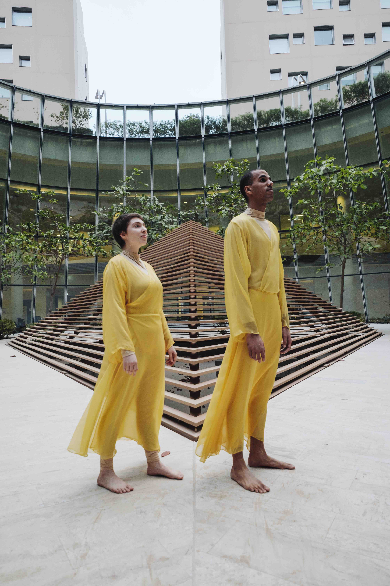
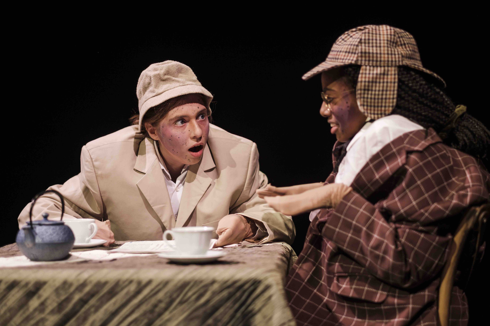
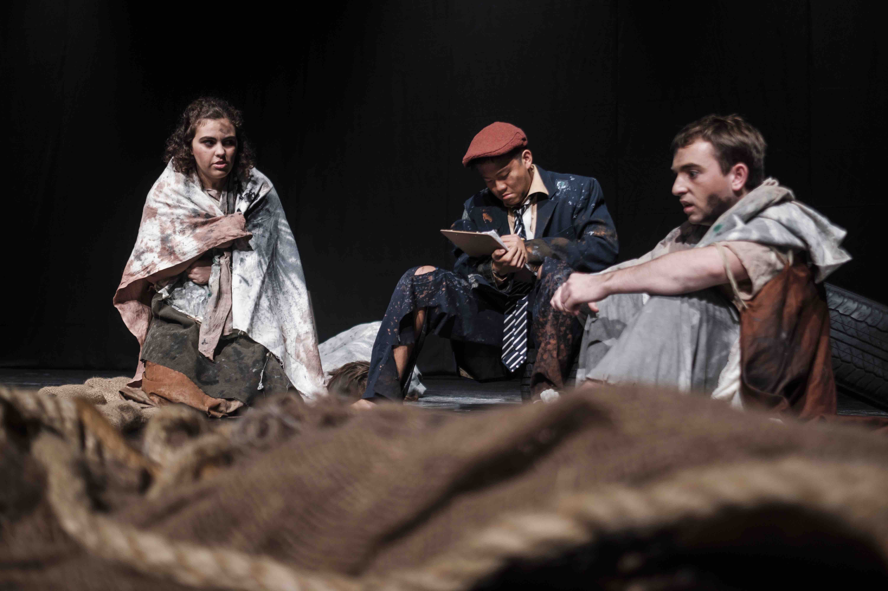
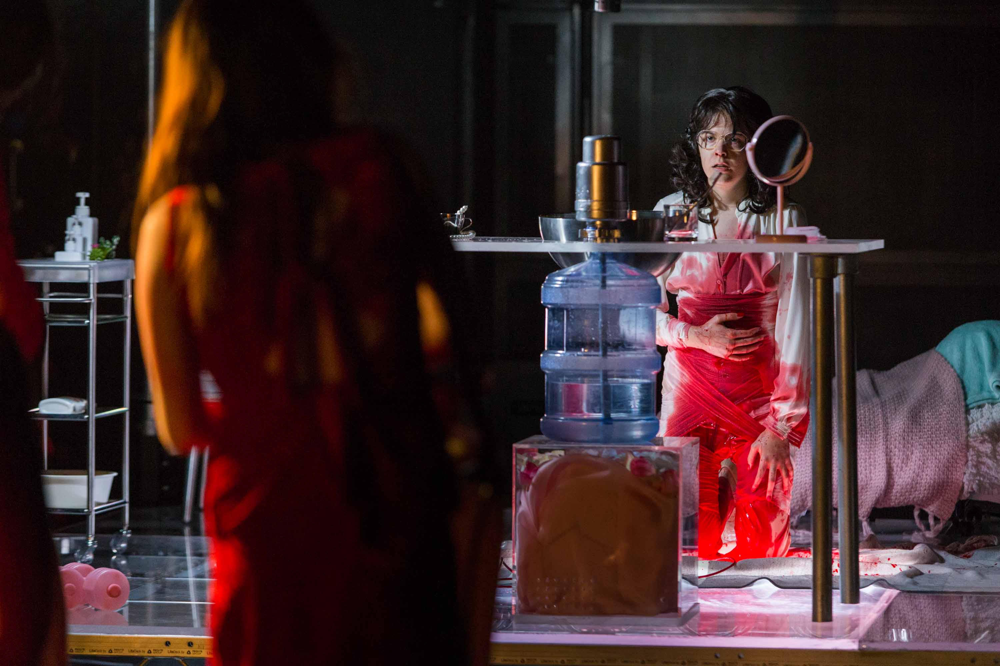
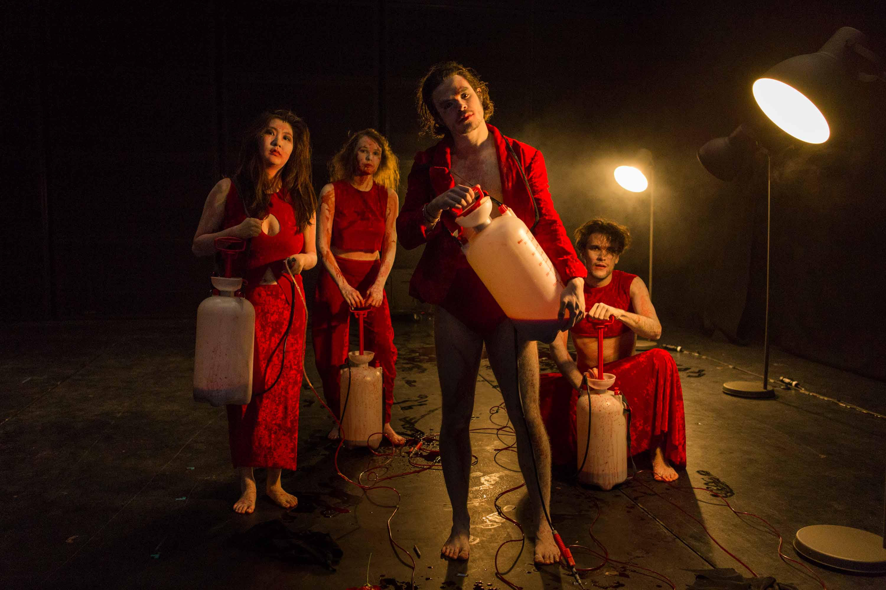
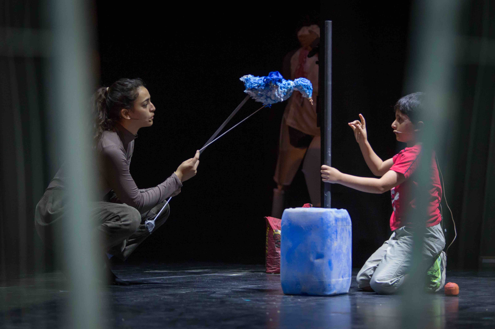
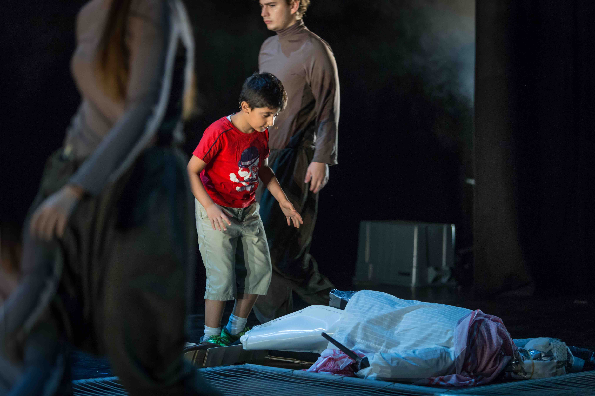
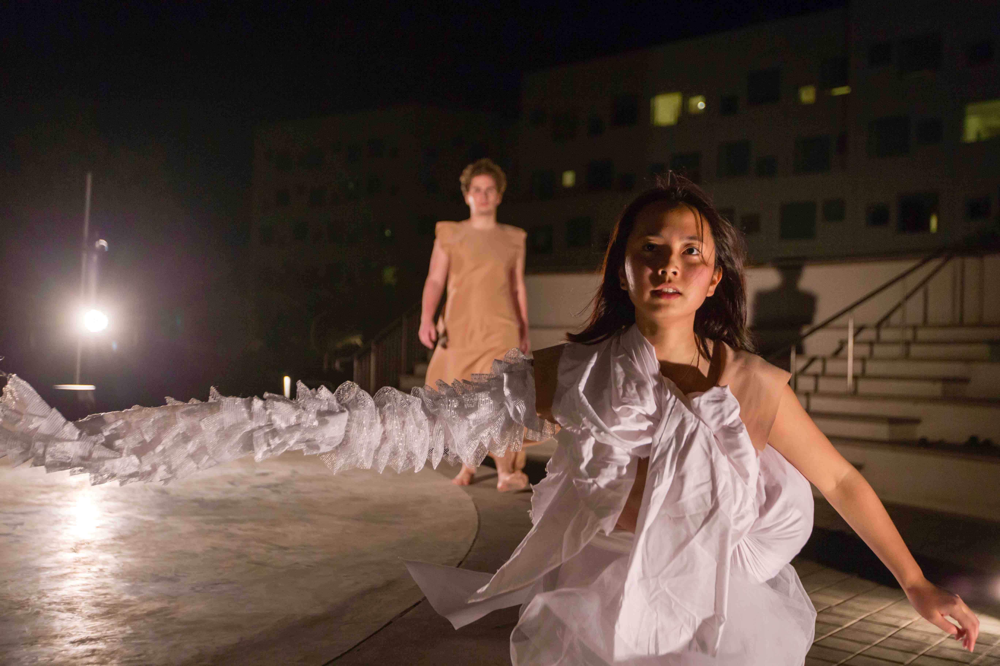

MARIKA NIKO


experience
Costume Designer: Experience
memory is a partial victory over death
2019 Costume Designer and Choreographer
memory is a partial victory over death is a site-specific dance performance in the A5 Atrium that occurs over the course of sunset. Drawing upon the relationship between memory and materiality, the work invites the audience to witness two performers attempting to pursue, find, and ultimately reimagine each other’s images on the window reflections that fade through time. The piece was inspired by how my grandmother, who has frequent memory loss, talks about her childhood memories. While I have an urge to materialize memories as a response to my fear of forgetting, the conversation with her allowed me to consider how memories can be remembered and worked on through immateriality. Facing the inevitable conditions of material disintegration, the two performers pay close attention to the urgency of the present as well as the repeated actions in order to archive memories.

Courtesy of The NYUAD Theater Program, Photo Credits To Waleed Shah
Forné5
2018 Costume Designer and Set Designer
Forné5 is a celebration of the works of Cuban-American playwright, Maria Irene Fornés. Presented by NYU Abu Dhabi students, this interpretation of Fornés’ work invites a close look at the experiences and connections that comprise our human condition, both in the familiar and the uncanny.


Courtesy of The NYUAD Theater Program, Photo Credits To Waleed Shah
ANAEMIA
2017 Costume Designer and Dramaturg
A biopsychic dissection of queerness and monstrosity through theatre design; a living portfolio. Directed by Lucas Olscamp.


Courtesy of The NYUAD Theater Program, Photo Credits To Koh Terai
65 Joules
2017 Costume and Set Designer
A story of a 6-year old Mustafa's attempt to reconcile with his personal loss through creation and destruction of his imagination. Directed by Rita Akroush.


Courtesy of The NYUAD Theater Program, Photo Credits To Koh Terai
in the becoming
2017 Costume Designer
